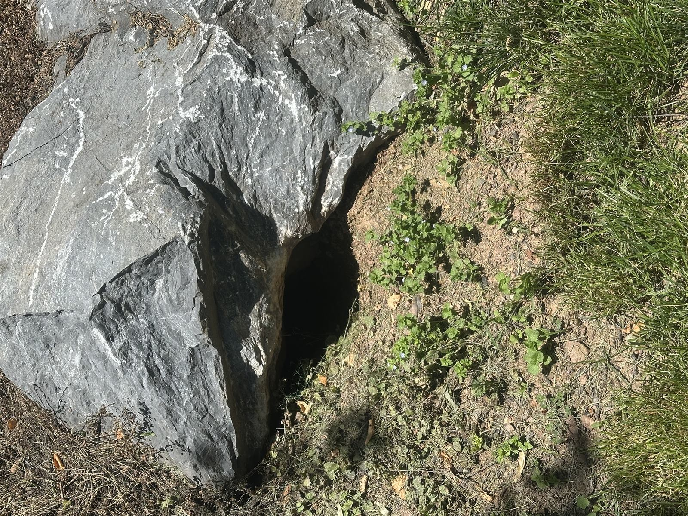
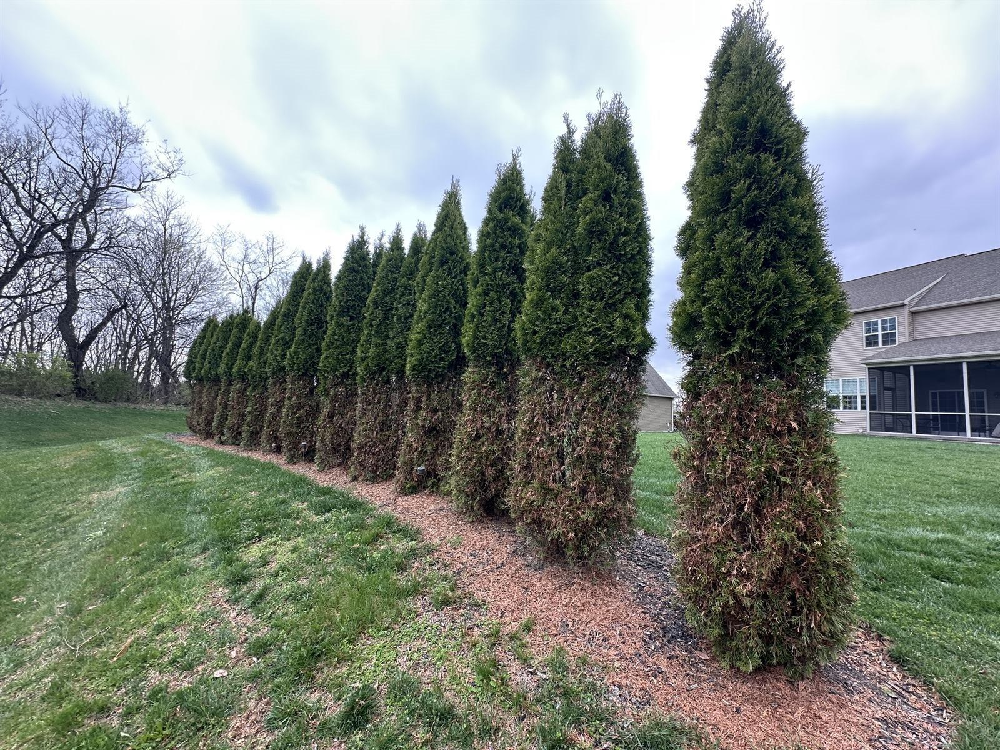

Wildlife ID Library
It's eleven at night, something is moving around over your bedroom ceiling, and you're lying there doing the math: how big is it, is it going to come through, and are the kids okay?
Here's the reassuring part — you almost never have to see the animal to know what it is. The hour you hear it narrows the list faster than anything, and the hole or droppings finish the job. Work through it below, and if you'd rather just ask a person, text us a photo. We do that for free, all day, and we'll tell you honestly if it's something that can wait.
Free ID — Text a Photo to 717-379-3248
Start Here: What Time Do You Hear It?
The single most useful diagnostic for anything overhead. Before you look for droppings or holes, note the clock — it narrows the list faster than anything else.
Daytime — Especially Dawn & Late Afternoon
Gray squirrels. Scampering, rolling (they cache nuts), and scratching, with two clear activity peaks. If it's noisy while you're having coffee and silent at midnight, this is your animal. See squirrels in the attic.
Night — Heavy, Slow, Thumping
Raccoons. They sound like a person moving around up there, because they're comparably heavy. Add chittering, growling, or the distinctive crying of kits in spring. Often accompanied by torn soffits and a hole far bigger than a squirrel would make.
Night — Light, Fast, Skittering
Rodents or flying squirrels. Flying squirrels are nocturnal, colonial (several rather than one), and get mistaken for rats constantly. Note: rodent control isn't a service we offer — see the bottom of this page.
Dusk & Dawn — Chittering, Squeaking, Scratching in Walls
Bats. Often heard in walls rather than open attic, loudest on hot evenings as they get restless before the nightly fly-out. Go outside at sunset and watch the roofline — that's the confirmation. See bats in the attic.
Species We Handle in Central PA
These are the animals we're licensed to handle, under our Pennsylvania Game Commission Nuisance Wildlife Control Operator certification — a separate license from pest control that most exterminators don't carry. Each one has its own rules about timing, handling, and what can legally be done, which is the real reason this isn't a DIY job even when it looks like one.

Groundhog (Woodchuck)
Burrows under structures, eats gardens, undermines slabs and shed pads. A rabies vector species in PA. The most common structural-damage wildlife call we get. Groundhog removal →

Gray & Flying Squirrels
Attics, soffits, chimneys, and gable vents. Constant gnawing means chewed wiring — a documented attic fire risk. Two litters a year here. Squirrel removal →
Raccoon
Attics, chimneys, and under decks; females with kits are the classic spring call. Strong, dexterous, and destructive. Rabies vector species, and their droppings carry roundworm — this is not a DIY animal. Wildlife services →
Skunk
Dens under decks, sheds, porches, and crawl spaces. Grub-digging in lawns. Rabies vector species, and removal takes technique for reasons that need no explanation. Wildlife services →
Opossum
Under decks and in crawl spaces, garages, and outbuildings. Slow, generally harmless, and famously good at eating ticks — but not something you want denning under the porch. Wildlife services →
Bats
Attics, soffits, wall voids, and behind shutters. Protected in Pennsylvania — exclusion only, never extermination, with legal timing restrictions during maternity season. Bat exclusion →
Snakes
Basements, crawl spaces, garages, and around foundations. We identify the species and remove safely. Pennsylvania does have venomous species (timber rattlesnake, copperhead) — if there's any chance that's what you're looking at, don't approach it. Wildlife services →

Deer
Not removal — a browse problem. Ragged torn stems (deer have no upper front teeth) and a clear browse line on arborvitae, yews, and hostas, worst in winter. Deer damage →
Service Area
We serve Dauphin, Cumberland, Lebanon, Perry, and York Counties — including:
Harrisburg, Paxtang, Penbrook, Steelton, Highspire, Middletown, Hummelstown, Hershey, Palmyra, Annville, Cleona, Lebanon, Grantville, Linglestown, Colonial Park, Susquehanna Township, Lower Paxton, Camp Hill, Mechanicsburg, Lemoyne, New Cumberland, Wormleysburg, Enola, Marysville, Halifax, Millersburg, Elizabethtown, Mount Joy, Mount Wolf, Manchester, Dillsburg, Carlisle, Boiling Springs, and surrounding Central PA communities.
Wildlife ID FAQ
Can you identify it from a photo?
Usually — and it's free. Text photos to 717-379-3248: the damage or hole, the droppings (photograph, don't handle), and the surrounding area for scale. Between the picture and what time you hear it, we can normally tell you what you have before anyone comes out.
Why does it matter which animal it is?
Because the legal handling, the timing, and the method all change. Bats can't be touched during maternity season. Raccoons and skunks are rabies vector species with specific rules. Squirrels need entry sealing after removal, groundhogs need burrow exclusion. And some of it isn't ours at all — knowing that saves you money.
Is it safe to just wait and see?
Depends on the animal. A groundhog burrow gets bigger and the structural damage compounds. Squirrels chew wiring. Raccoons and bats are rabies considerations. Opossums under a shed in fall are genuinely low-urgency. We'll tell you which situation you're in rather than manufacture an emergency.
I found a baby animal alone. What do I do?
Usually the mother is nearby and will return — most "orphans" aren't. Don't handle it, and don't relocate it. If it's genuinely injured or the mother is confirmed dead, that's a licensed wildlife rehabilitator's job rather than ours, and we'll point you to one.
Can I trap it myself?
Pennsylvania regulates trapping, transport, and release, and several of these are rabies vector species with additional restrictions on what may legally be done with a captured animal. Beyond legality: trap-shy animals, orphaned young sealed inside, and bites are the routine DIY outcomes. If you've already got a trap out and it isn't working, that's a normal call for us.